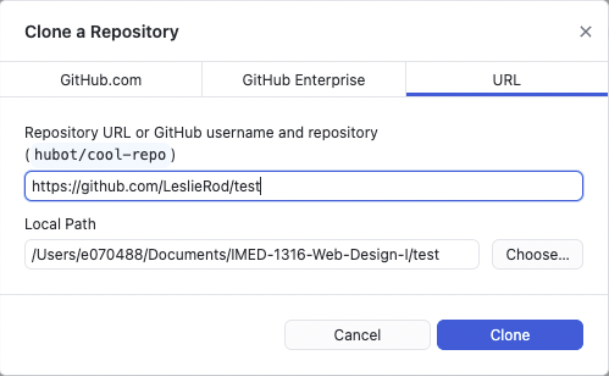

Steps for creating Web Design 1 websites
Create Repository
Follow the steps and shreenshot examples below:
- In GitHub account, click + sign in upper right corner
- Select “New Repository”
- Repository Name = (name it after your project)
- Check “Public”
- Add ReadMe file
- Click “Create Repository”
Clone the repository
Follow the steps and screenshot examples below:
This is creating a copy of what is on your online account to your local computer
- Click on your repository
- Click green “Code” button in upper right corner
- Click “Open with GitHub Desktop”
- A “Clone a Repository” window will open
- Make sure the local path is saving to the correct folder
- Click the “Clone” button
- Double check your local computer to make sure the files were copied over

Create Dreamweaver site
Follow the steps and screenshot examples below:
Create a new site in Dreamweaver every time you clone a new repository
- In Dreamweaver go to:
Site - New Site - name the site the same name as the repository
- For “Local Site Folder” select the folder where your repository was cloned on your computer
- Click the “Choose” button
- Save
- Go to: File - New - Title (this is the title for the tab of your site)
- Click “Create” button
New> Title (this is the title for the tab of your site)
Click “Create” button">
Create first webpage (index.html)
Follow the steps and screenshot examples below:
- In Dreamweaver go to:
File - Save As - index.html
This is a very important filename for the first page of your site.
- Save
- Enter code into the of your page
- Save page


Commit changes
Follow the steps and screenshot examples below:
In GitHub Desktop you should see the index.html file in your new repository
- Click the “Commit to main” button Commits can be thought of as snapshots along the timeline of a Git project
Push changes to online repository
- Click “Push origin” to “push it up to the internet”
Create a “Gitpage”
Follow the steps and screenshot examples below:
- In your GitHub account (from repository view) click “Settings” (last option in menu tabs along the top)
- Click pages (left sidebar menu)
- Under the Branch action select “Main” from the dropdown
- Click Save
- Select “Actions” from the top tabs menu. The workflow status may show “in progress”
- Once it is complete, go back to:
Settings - Pages - a url is generated for your live page
- Click “Visit Site” button
Pages> a url is generated for your live page
Click “Visit Site” button">